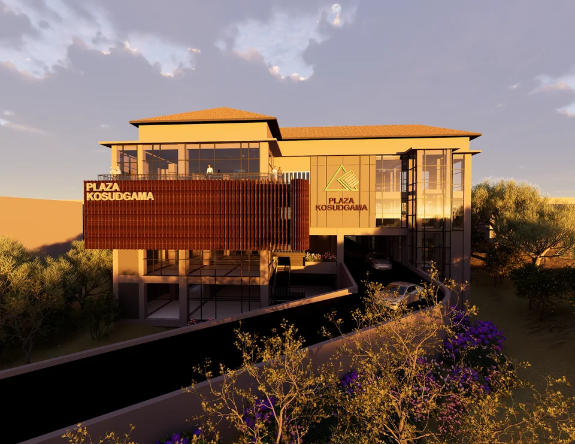
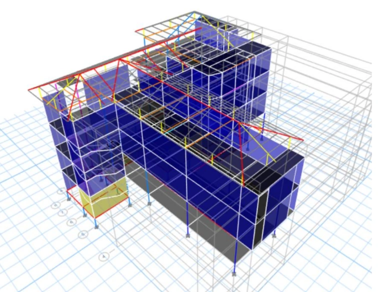
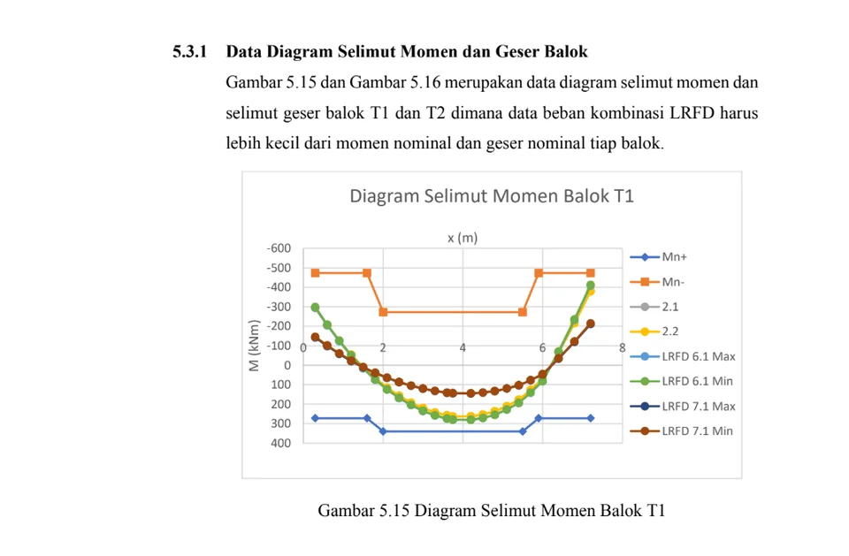
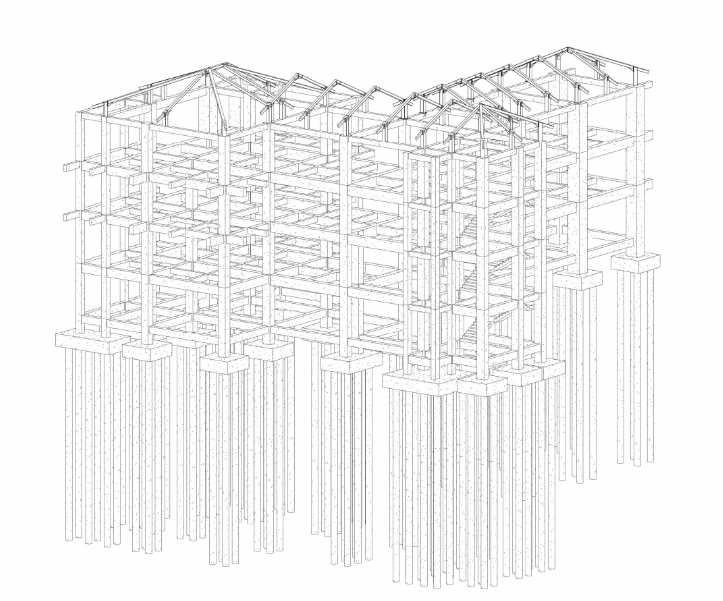
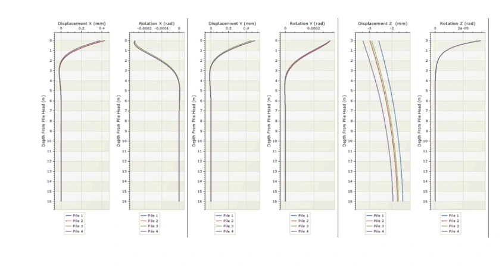
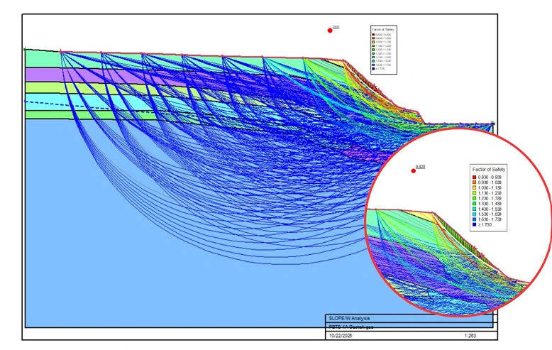

Capstone Design —
Plaza Kosudgama
Full structural design capstone project for Plaza Kosudgama, a multi-story building at Universitas Gadjah Mada. The project covered complete structural analysis, RC frame member design, and BIM documentation.

Project Overview
Plaza Kosudgama is a multi-story building located at Universitas Gadjah Mada, Yogyakarta. This capstone design project tasked students with producing a complete structural design package for the building from first principles — replicating the workflow of a professional structural engineering consultancy.
The project required integration of structural analysis software, code-based design procedures (SNI), and BIM documentation into a cohesive engineering deliverable.
Scope of Work
- Structural system selection and preliminary sizing based on architectural constraints
- 3D structural model development in ETABS for gravity and lateral load analysis
- Seismic load analysis per SNI 1726 (Indonesia Earthquake Code)
- RC frame member design (beams, columns, slabs, foundations) per SNI 2847
- Reinforcement detailing and bar schedule preparation
- 3D BIM model creation in Autodesk Revit with structural elements
- Complete design report documentation
- Foundation analysis with RSPile
- Slope stability analysis with SlopeW
Key Deliverables
- ETABS structural analysis model with output reports
- Member design calculations for all structural elements
- Structural drawings set (plans, sections, details, bar schedules)
- Geotechnical (foundation design and slope stability) report
- Comprehensive design report
- Foundation analysis with RSPile
- Slope stability analysis with SlopeW




